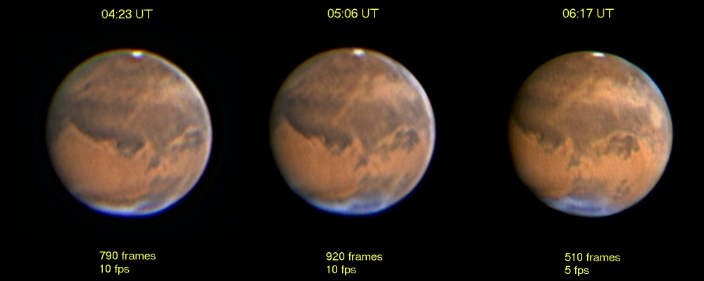

{kind=link}

The image above shows the progression of a dust storm as seen on October 22, 2005. Seeing was particularly good that night. Other images from this opposition are below, ordered with the most recent images at the top.
The images can be used for educational purposes as long as credit is provided.
Copyright Rolf Meier
Ottawa, Ontario, Canada
Unless otherwise noted, images are stacked using Registax3 or Registax4, wavelet processing is applied, and final adjustments are made using Paint Shop Pro.
Return to Home page.
November 26, 2005
Seeing poor. Clouds over Niliacus Lacus not as intense. Here is an animation to show how the dust and clouds have progressed over the course of the past month. In addition to the early movement of a dust storm, the southward movement of clouds from Niliacus Lacus can be seen in the last 2 frames. Other changes can be noted around the NPH and the SPC, and of course the change in phase.
C14 @f39, ToUcam
November 24, 2005
Seeing poor, hazy. Managed to get some images between two Alberta Clipper systems (fast-moving snowstorms). NPH continues to brighten, and there is some morning fog. Compare to the much better seeing experienced on October 22.
November 15, 2005
Seeing very poor, and hazy. South Polar Cap brighter, and a hint of North Polar Cap appearing. Cloud over Olympus Mons much less obvious. Still hoping for some good seeing this month, before Mars gets too much smaller.
C14, f/50 ToUcam Pro, 5 fps. Images resized 78%.
November 12, 2005
Seeing poor. Olympus Mons not quite as bright.
C14, ToUcam Pro, 5 fps
November 11, 2005 04:14 UT

Seeing poor.
C14, ToUcam Pro, 5 fps
November 9, 2005
Seeing poor to fair. Bright cloud over Olympus Mons, just leaving disk, and over Elysium Mons. Compare 05:27 to the October 2 image, when the position of the cloud was a reddish spot.
C14, ToUcam Pro, 5 fps
October 31, 2005 04:23UT
Very poor seeing. Wide morning ring of dust or haze. SPC looks obscured, but NPH is brilliant.
C14 at f/39, ToUcam Pro, 346 frames @ 5fps
October 29, 2005 04:47UT
Poor seeing. Appears to be very dusty or hazy in the upper right quadrant, generally to the right of Hellas. Sinus Meridiani appears slightly obscured.
C14 at f/39, ToUcam Pro, 492 frames @ 5fps
October 22, 2005

A night of very good seeing. The dust storm has now formed 2 bands on either side of Mare Erythraeum. Subtle changes are visible over the 2-hour interval, with the southern band of dust appearing to widen and dissipate somewhat. Colors here are very similar to what was noted visually in the C14 at 780X. The progression of the dust storm across Mare Erythraeum has been captured for several days, and this animation shows the storm moving southward and then northward again. Unfortunately there is some loss of detail in the conversion to GIF. The CM for this animation is 6.5 degrees. Note also the changes in the North Polar Hood region during this interval. It is interesting to observe how “seeing” makes a big difference in the amount of detail which is seen.
C14 at f/39, ToUcam Pro
October 21, 2005 04:29 UT
The dust storm continues to change shape, widening and moving southward. An animation was made, covering the period from approximagely 04:00 to 08:00 U.T. Note how the dust stom appears as a blue haze on the morning terminator, and yellow when central on the disk.
The above image was resized approximagely 66% for 10 pixels per arcsecond.
C14 at f/50, ToUcam Pro, 10 fps.
October 18, 2005 02:41 UT

Possibly the worst seeing of this year's Mars opposition. The jet stream continues to linger overhead, driven by a low pressure system stalled over eastern Canada. Not a very good image, but it is presented here to show the development of a dust storm over the Chryse region, not apparent only 2 nights previous (below).
C14 at f/39, ToUcam Pro, 10 fps.
October 16, 2005
By now Mars should be showing a lot of detail, but unfortunately the atmosphere over Ottawa has not been cooperating. After a solid week of rain, the sky finally cleared with the passing of a cold front, but it was very windy tonight and the seeing was extremely poor. It turned out to be clear for only 4 hours and then the clouds returned.
These images have been resized approximately 66% for an image scale of 10 pixels per arcsecond.
C14 at f/50, ToUcam Pro, 3-minute AVIs at 10 fps.
October 6, 2005 04:34 UT
C14
at f/50; Toucam Pro. Image resized to 90%.
Only slightly better seeing than the previous night. Wanted to obtain a better view of the clouds, but they appear not as bright.
October 5, 2005 05:29 UT
C14
at f/50; Toucam Pro.
Seeing was poor, but an AVI was taken to record the bright Tharsis cloud on the PM terminator. Olympus Mons is also visible.
October 3, 2005 06:42 UT
C14
at f/50; Toucam Pro.
Seeing fair.
October 2, 2005 07:24 UT
C14
at f/50; Toucam Pro
Seeing fair.
September 28, 2005 06:19 UT
C14
at f/50; Toucam Pro.
Seeing poor.
September 24, 2005 05:31 UT

C14
at f/50; Toucam Pro.
Seeing poor.
September 19, 2005 06:27 UT
C14
at f/33; Toucam Pro.
Seeing poor.
September 18, 2005 05:36 UT
C14
at f/33; Toucam Pro.
Seeing fair.
September 10, 2005 06:49 UT
C14
at f/33; Toucam Pro.
Seeing fair.
September 5, 2005 06:16 and 07:28 UT
C14
at f/33
Seeing poor. This was an experiment to determine if a black-and-white webcam could achieve better results. There is certainly less noise in the black-and-white image, but the seeing was not good enough to make a comparison of the resolution.
August 6, 2005 08:29 UT
6-inch
Astro Physics Super Planetary refractor at f/36; ToUcam Pro
Seeing poor. The first image of this apparition of Mars. Solis Lacus is obvious, but the planet is very small.
{kind=link}
{kind=link}